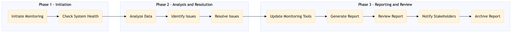

The process document for monitoring the health and availability of various OTA and TMC systems to ensure seamless operations.
| Trigger | Scheduled automated checks or manual trigger by IT staff upon detecting anomalies. |
| Outcome | All monitored systems are operational, with no significant performance degradation or outages reported. |
| Systems | Expedia Open World Partner Central Amadeus NDC Sabre GDS Travelport EVC One Key TravelAds AWS SageMaker Snowflake Kafka Salesforce Tableau Concur T2 Concur Expense Amex GBT Neo/Complete International SOS Cvent Amex Corporate Card VCN Analytics Cloud Workday |

Click to enlarge
| Step | Name & Pain Point | Role | System | Input | Output | KPI | Flags |
|---|---|---|---|---|---|---|---|
| 1.1 | Initiate Monitoring System unavailability | IT Operations Manager | Monitoring Tools (e.g., Prometheus, Grafana) | Scheduled time or manual trigger | Monitoring process starts | 0% downtime | ⚠ Exception |
| 1.2 | Check System Health Delayed response times | IT Engineer | All OTA and TMC systems listed | Health check scripts | Health status report | 100% system availability | ◆ Decision |
| 1.3 | Analyze Data Data discrepancies | Data Analyst | Analytics Tools (e.g., AWS SageMaker, Snowflake) | Health status report | Analyzed data insights | 95% accuracy in analysis | ⚠ Exception |
| 1.4 | Identify Issues False positives | IT Engineer | Monitoring Tools | Analyzed data insights | Issue identification report | 90% issue detection rate | ◆ Decision |
| 1.5 | Resolve Issues Long resolution times | IT Support Team | All OTA and TMC systems listed | Issue identification report | Resolved issues | 98% issue resolution rate | ⚠ Exception |
| 1.6 | Update Monitoring Tools Outdated configurations | IT Operations Manager | Monitoring Tools (e.g., Prometheus, Grafana) | Resolved issues | Updated monitoring configurations | 100% configuration accuracy | ⚠ Exception |
| 1.7 | Generate Report Inaccurate reporting | IT Engineer | Reporting Tools (e.g., Tableau, Salesforce) | Resolved issues and updated configurations | Health and availability report | 95% report accuracy | ⚠ Exception |
| 1.8 | Review Report Missed issues | IT Operations Manager | Reporting Tools (e.g., Tableau, Salesforce) | Health and availability report | Approved report | 100% review accuracy | ⚠ Exception |
| 1.9 | Notify Stakeholders Delayed communications | IT Operations Manager | Communication Tools (e.g., Email, Slack) | Approved report | Stakeholder notifications | 100% notification rate | ⚠ Exception |
| 1.10 | Archive Report Data loss | IT Engineer | Reporting Tools (e.g., Tableau, Salesforce) | Approved report | Archived report | 100% archiving rate | ⚠ Exception |